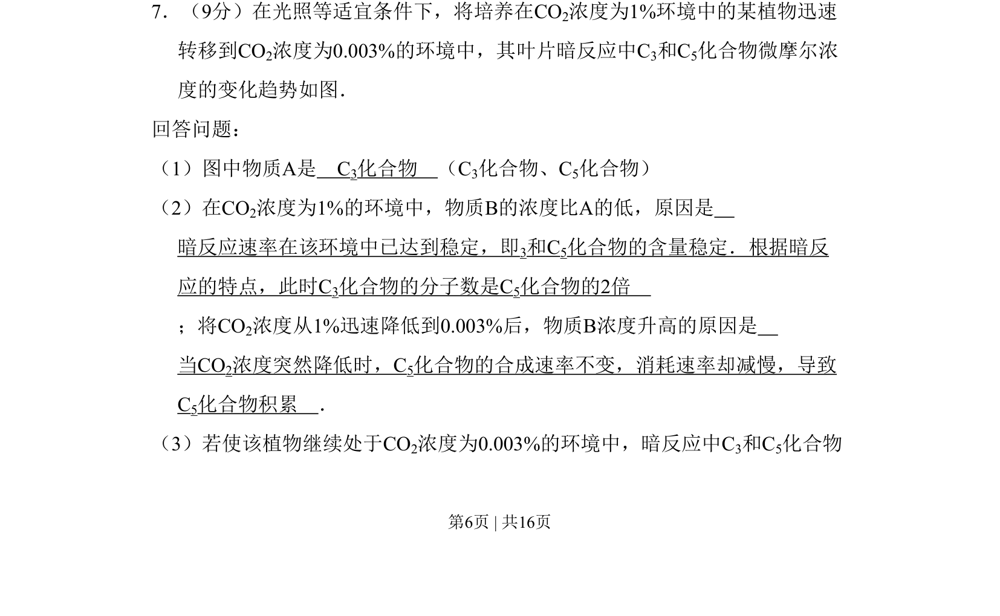
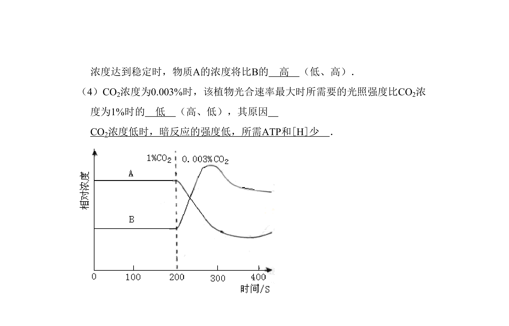
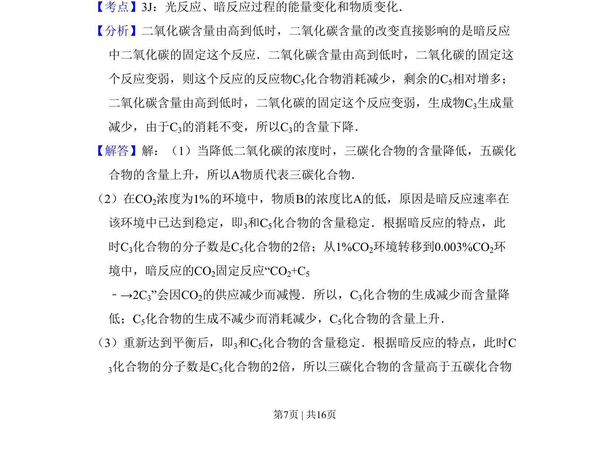
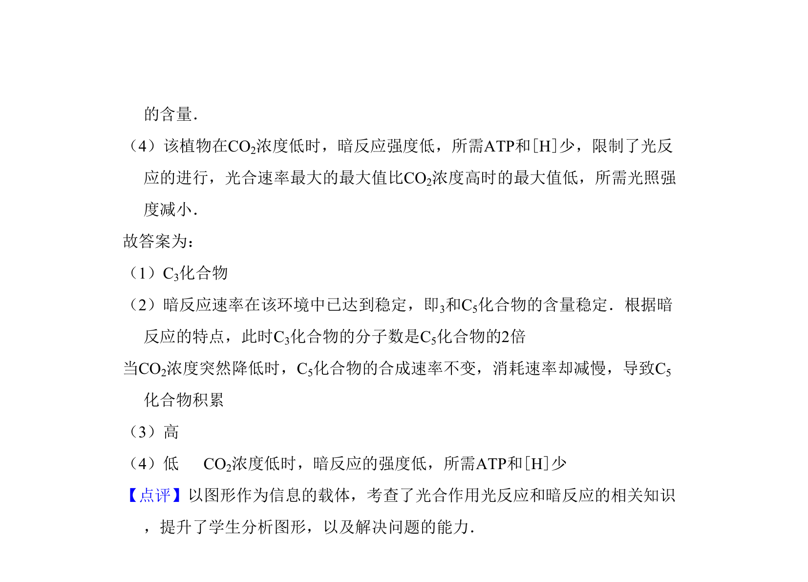

考点：光合作用 暗反应 C3 C5 CO2浓度


该题通过曲线图分析光合作用暗反应中C3和C5化合物浓度在CO2浓度变化时的动态变化及原因。


📄 原 PDF 第 6 页：
素材/真题/吉林/2008-2024·（吉林）生物高考真题/2011年高考生物试卷（新课标）（解析卷）.pdf
7．（9分）在光照等适宜条件下，将培养在CO2浓度为1%环境中的某植物迅速 转移到CO2浓度为0.003%的环境中，其叶片暗反应中C3和C5化合物微摩尔浓 度的变化趋势如图． 回答问题： （1）图中物质A是 C3化合物 （C3化合物、C5化合物） （2）在CO2浓度为1%的环境中，物质B的浓度比A的低，原因是 暗反应速率在该环境中已达到稳定，即3和C5化合物的含量稳定．根据暗反 应的特点，此时C3化合物的分子数是C5化合物的2倍 ；将CO2浓度从1%迅速降低到0.003%后，物质B浓度升高的原因是 当CO2浓度突然降低时，C5化合物的合成速率不变，消耗速率却减慢，导致 C5化合物积累 ． （3）若使该植物继续处于CO2浓度为0.003%的环境中，暗反应中C3和C5化合物